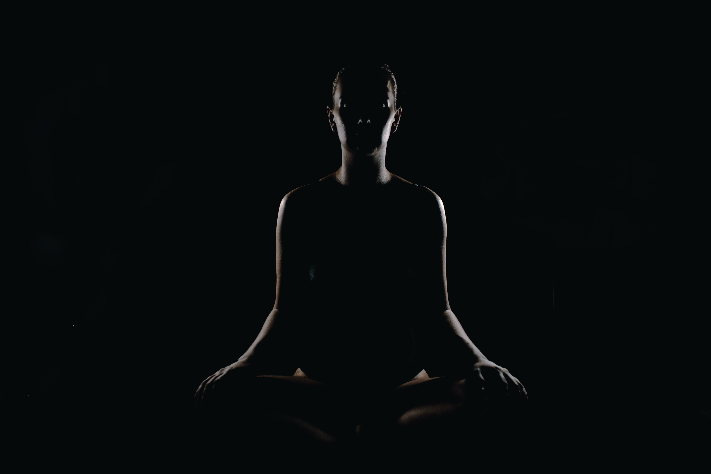

Meditation

What to expect
Focus
- Focused meditation for beginners helps you meditate on your senses: sight, sound, smell, touch and taste
Chakra
- Chakra meditation uses attention, intention, and visualization along with each chakra mantra to bring balance and enhance its function
Taoist Technique
- Microscopic Orbit meditation helps to circulate subtle energy known as Qi (pronounced “chee”) or prana through the mind/body system
Yoga
What to expect
Vinyasa
- This style strings postures together so that you move from one to another, seamlessly, using breath
Kundalini
- A combination of spiritual and physical yoga. This style releases the trapped kundalini energy in your body
Restorative
- Focuses on winding down after a long day and relaxing your mind. At its core, this style focuses on body relaxation